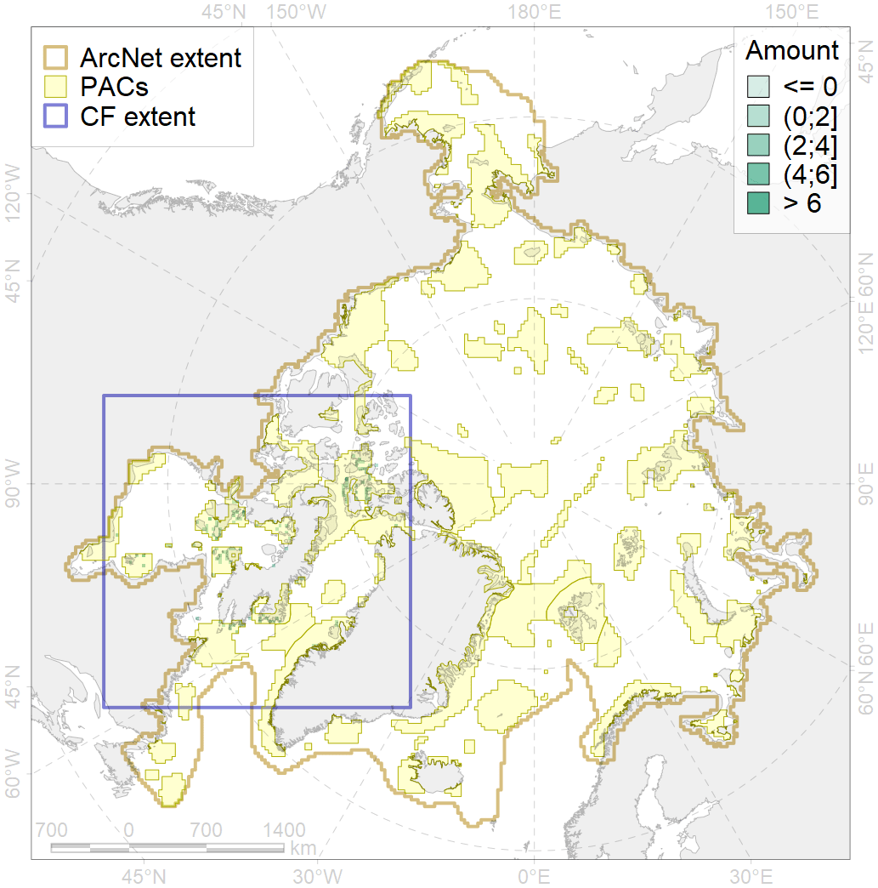
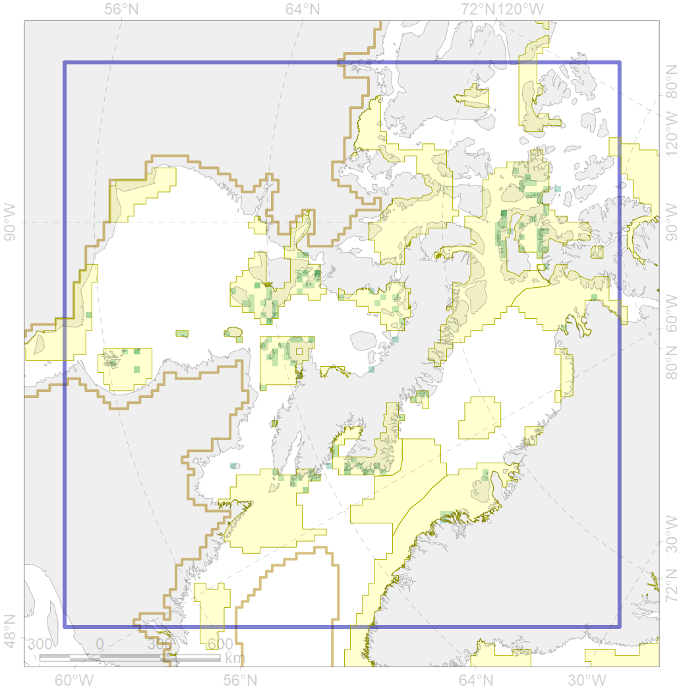

1011

| CF ID | 1011 |
| CF Name | Atlantic Walrus haulouts in Nunavut and West Greenland |
| Time Period | 1976 - 2016 |
| Source(s) | http://www.nunavut.ca/files/2016-08-15%20WWF-Canada%20-%20Walrus%20haulout%20expert%20report.pdf |
| Seasonality | June - September |
| Depth Horizon | > 0m |
| Methodology | Compilation of all available records taken from survey reports, personal interviews, and TEK. |
| Author Name | Maria Solovyeva |
| Notes | |
| Conservation Target Set in the Scenario | 0.96 |
| Conservation Target Achieved in the Scenario | 0.961 (Scenario: 100.1%) |
| PAC ID | Proportion in the PAC | Contribution to ArcNet Target Achievement | PAC’s Contribution to the Achieved Target |
|---|---|---|---|
| 44 | 2.4% | 2.4% | 2.4% |
| 46 | 7.9% | 7.9% | 7.9% |
| 50 | 1.2% | 1.1% | 1.1% |
| 51 | 2.8% | 2.7% | 2.7% |
| 52 | 29.1% | 30.0% | 30.0% |
| 66 | 5.1% | 5.2% | 5.2% |
| 67 | 20.9% | 21.6% | 21.6% |
| 70 | 1.6% | 1.6% | 1.6% |
| 71 | 4.7% | 4.9% | 4.9% |
| 72 | 2.4% | 1.9% | 1.9% |
| 73 | 12.6% | 13.0% | 13.0% |
| 75 | 0.8% | 0.6% | 0.6% |
| 76 | 5.9% | 6.0% | 6.0% |
| inner | 97.2% | 99.0% | 99.0% |
| outer | 2.8% | 1.0% | 1.0% |